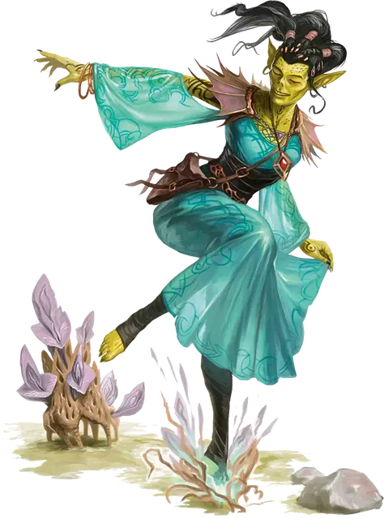

Гитцерай путешественник
Githzerai Traveler
Средняя Аберрация (Гит)

Класс Доспеха 15 (псионическая защита)
Хиты 44 (8к8 + 8)
Скорость 30 футов
| мод | спас | ||
|---|---|---|---|
| СИЛ | 12 | +1 | +3 |
| ЛОВ | 15 | +2 | +4 |
| ТЕЛ | 12 | +1 | +1 |
| мод | спас | ||
|---|---|---|---|
| ИНТ | 14 | +2 | +4 |
| МДР | 16 | +3 | +5 |
| ХАР | 10 | +0 | +0 |
Навыки Восприятие +5, Выживание +5
Чувства пассивное Восприятие 15
Языки Общий, Гитский
Опасность 3 (700 опыта)
Бонус мастерства +2
Особенности
Психическая защита. Пока гитцерай не носит броню и не носит щит, к его КД добавляется модификатор Мудрости.
Действия
Мультиатака. Гитцерай совершает три Безоружные атаки.
Безоружная атака. . Рукопашная атака оружием: +4 к попаданию, досягаемость 5 футов, одна цель. Попадание: 6 (1к8 + 2) дробящего урона плюс 4 (1к8) урона психической энергией.
Использование заклинаний (Псионика). Гитцерай накладывает одно из следующих заклинаний, используя Мудрость в качестве базовой характеристики и без использования материальных компонентов (Сл спасброска от заклинаний 13):
• Неограниченно: волшебная рука [mage hand] (рука невидима);
• 1/день каждое: прыжок [jump], уход в иной мир [plane shift] (только на себя), телекинез [telekinesis];
Бонусные действия
Манипулирование материей (перезарядка 4-6). Гитцерай манипулирует энергией плана существования, на котором он находится, чтобы создать один из следующих эффектов (выберите один или бросьте к6):
• 1-2: Астральный шаг. Гитцерай может телепортироваться вместе с любым снаряжением, которое на нем надето, на расстояние до 40 футов в незанятое пространство, которое он может видеть. Кроме того, его скорость ходьбы увеличивается до 40 футов до начала его следующего хода.
• 3-4: Рост. Цветы и виноградные лозы начинают разрастаться вокруг гитцерая до начала его следующего хода, после чего исчезают; местность в пределах 15 футов от гитцерая считается труднопроходимой для других существ, пока существуют цветы и виноградные лозы.
• 5-6: Отражающий свет. Разноцветные огни окружают гитцерай до начала его следующего хода. В течение действия эффекта всякий раз, когда существо в пределах 5 футов от гитцерая попадает по нему броском рукопашной атакой, это существо получает 3 (1к3) урона силовым полем, поскольку магия наносит встречный удар.
Описание
“Можно подумать, что изучение всех этих удивительно диких планов в конце концов доведёт тебя до края. Если бы это произошло с гитцераями, то они рванули бы вперёд и вышли с другой стороны”.
— Морте
Гитцераи путешественники странствуют по мультивселенной, тренируясь и стремясь к космическому просветлению. Эти гитцераи учатся манипулировать планарными энергиями для создания удивительных эффектов.
ГИтЦЕРАИ
Гитцераи происходят от древнего народа, который также был прародителями гитьянки — все они были уничтожены или преобразованы свежевателями разума. Многие гитцераи обитают в Лимбо, оттачивая свои псионические способности, создавая свои дома на этом плане полном хаоса. Гитцераи, описанные здесь, часто пересекают планы, переходя между ними через порталы в Сигиле и Внешних землях. Чтобы узнать больше о других гитцераях, ознакомьтесь с "Бестиарием".